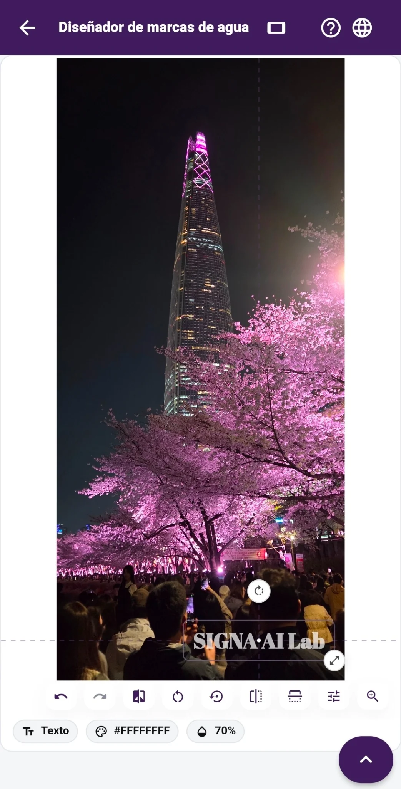

01 · MARCAS DE AGUA · Agrega marcas de agua gratis las veces que quieras
Hasta 12 fotos con marca de agua de una sola vez
Escribe tu nombre con una tipografía de la app o importa tu logo. También puedes armar un logo con tus iniciales, fotografiar algo que escribiste a mano o firmar en la pantalla. Elige la tipografía, el color y la opacidad, ajusta la marca en cada foto y guarda el diseño. Si activas la opción de la señal SIGNA, podrás usar las dos marcas en la misma imagen.
Muy pronto en la app. Podrás recibir sugerencias para colocar tu marca de agua en cada foto y, si prefieres otro lugar, moverla o volver a la posición anterior.
Fotos verticales u horizontales · Hasta 12 a la vez · Ajuste por foto · Diseños guardados · Más tipografías con Pro
 Ver la pantalla completa ↗
Ver la pantalla completa ↗
